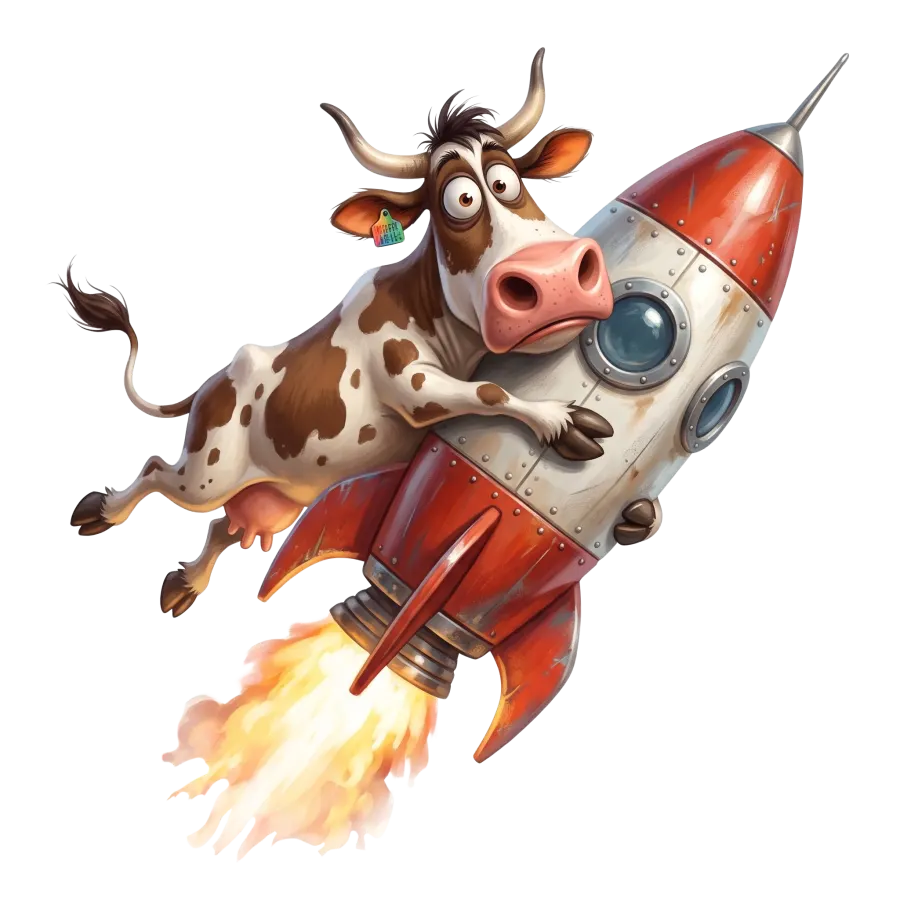
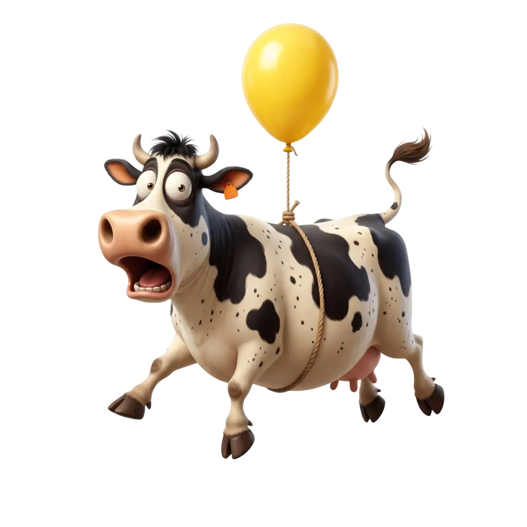
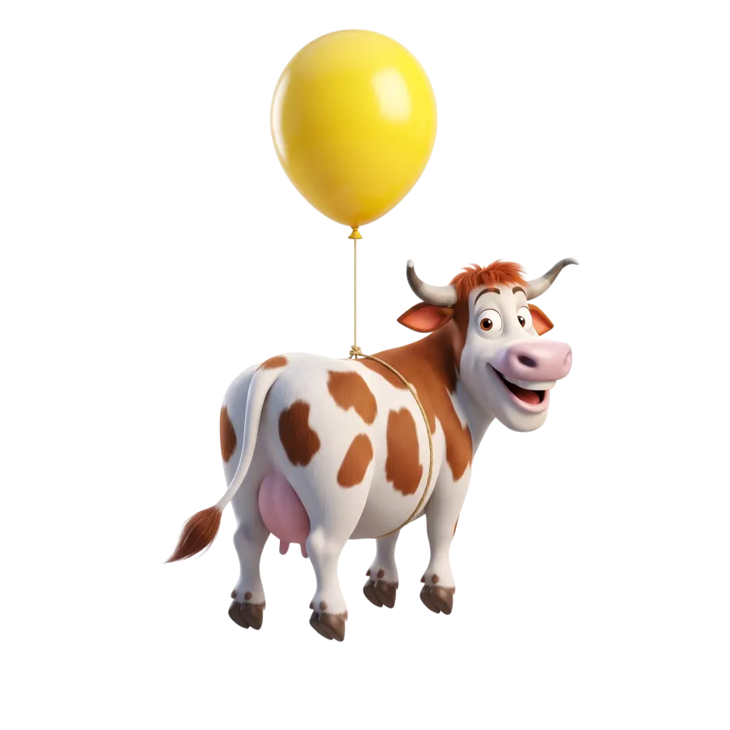
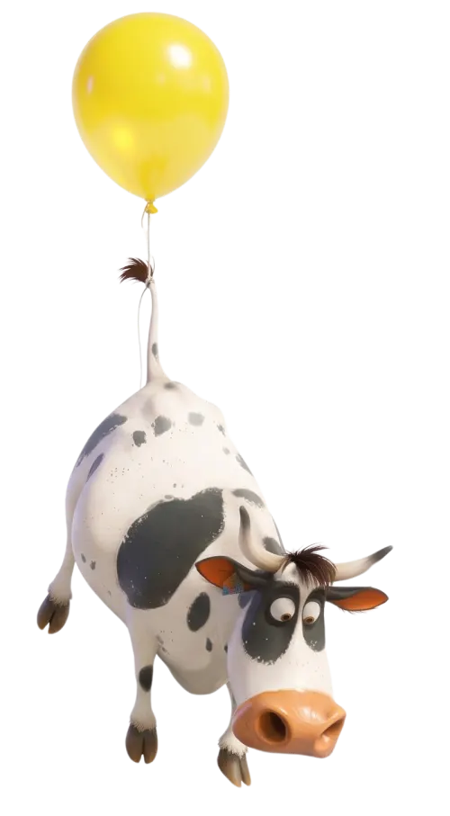

Smooth scroll animations. Native ScrollTimeline when the browser has it, a tiny JavaScript fallback when it doesn't.
Scroll down ↓

Moves diagonally and turns as the section scrolls past, with a quadIn ease.
buttery.create({
elem: section,
direct: cow,
from: 'top-bottom',
to: 'bottom-top',
props: {
'--tx': { from: '-45vw', to: '45vw', timing: 'quadIn' },
'--ty': { from: '40vh', to: '-60vh', timing: 'quadIn' },
'--rot': { from: '-10deg', to: '15deg' }
}
}).start()Uses a via midpoint: she rises, then sinks back down, swaying as she goes.
props: {
'--ty': { from: '120px', via: '-160px', to: '60px', timing: 'sineInOut' },
'--rot': { from: '-6deg', via: '6deg', to: '-4deg', timing: 'sineInOut' }
}

